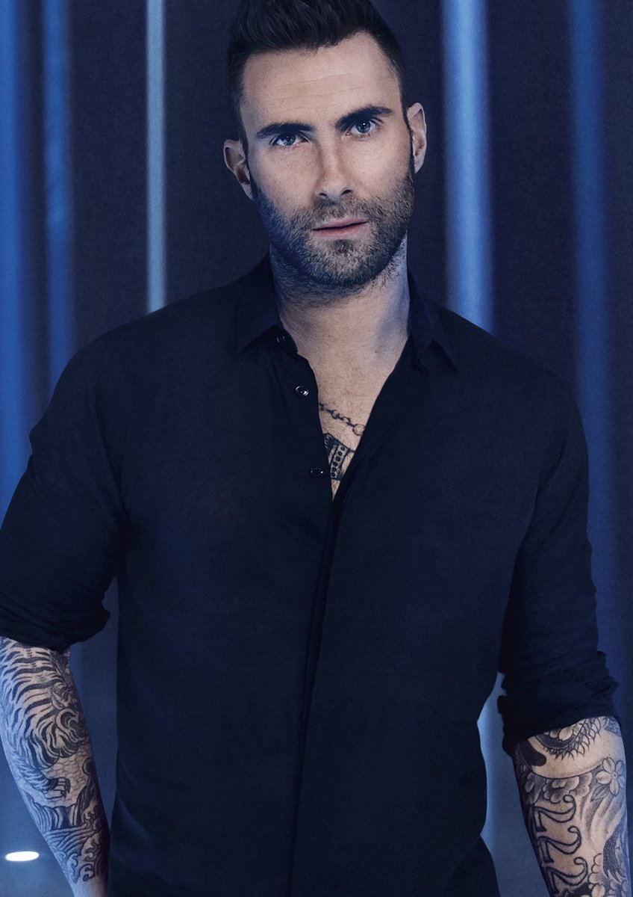

Sarah Geronimo, with her song "Kilometro", represented the Philippines in the 10th International Song Contest: The Global Sound, hosted by an Australian jury, as one of the 70 semi-finalists from different countries all over the world and later on advanced as one of the top 25 finalists
One of the most talked-about tracks on ‘Justice’ has been ‘Ghost’, with many fan theories speculating about whether the lyrics were penned about Justin’s ex-girlfriend, Selena Gomez.
In every situation of our relationship i know we know the pain if she/he want to give up so don't worry i know you can do it and you will fix your self soon to stand up and comeback of what you are

“Memories” reflect on a variety of aspects of life that we try to hold close and dear to us forever. Our first kiss, the first crush, that one specific birthday, one embarrassing moment, graduation, drinking with friends and the list goes on and on. We live and survive on these memories.
Moira has stated that the song is inspired by the words (the exact line from which the title was derived) and sacrifice of the character Bing Bong in the movie “Inside Out”.